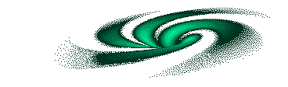
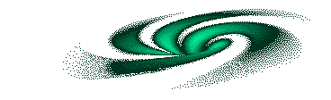

About me
I'm Adam, a high school senior planning on majoring in physics at either Lewis & Clark College or the University of Washington, both of which I'm waiting to hear back from - fingers crossed! When I'm not anxiously refreshing my inbox, you might find me reading. Currently I am reading "The Count of Monte Cristo" by Alexandre Dumas. My favorite band is The Smiths. I also love Deftones, Modest Mouse, The Smashing Pumpkins, Pixies, The Cure, The Velvet Underground, and Radiohead. My favorite songs are "There is a Light that Never Goes Out," followed closely by "Cemetery Gates." I like watching movies. My favorite movie is Interstellar but I like anything with Ryan Gosling (yes, anything), Whiplash, and pretty much anything you might find on a "Top 10 Sigma Movies" article (lol).
 
